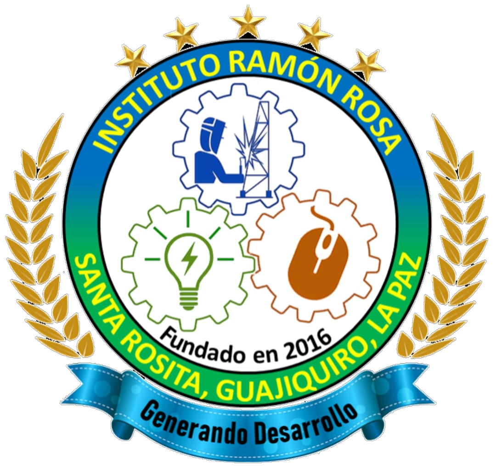

Bienvenido
El centro de educacion Media "Ramon Rosa" es la dependencia de la secretaria de educacion creada para atender a la poblacion en el Nivel Medio, ofreciendo la oportunidad de cursar bachilleratos que le permiten incorporarse a la vida laboral del pais, por medio de una formacion academica basada en criterios pedagogicos que garanticen el desarrollo de habilidades, tanto tecnicas como humanisticas, buscando una persona amamte de su patria y dispuesta por medio del trabajo productivo contribuir en el desarrollo cultural, social, economico e integral de las comunidades.
